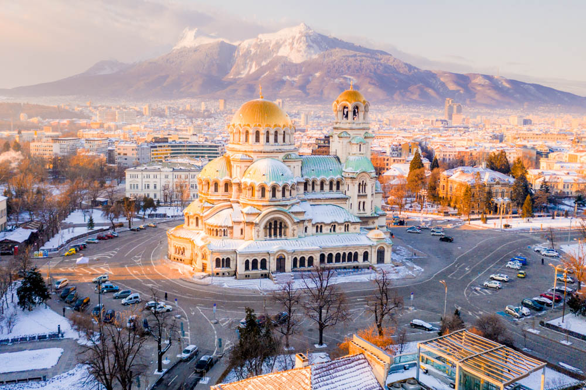

Winter tourism is an important part of Bulgaria’s travel industry. The country’s mountains provide excellent conditions for skiing, snowboarding, and other winter sports. Modern ski resorts attract visitors from across Europe and beyond.
Bansko is the most famous ski resort in Bulgaria. Located in the Pirin Mountains, it offers modern ski facilities, scenic mountain views, and a lively town filled with restaurants and traditional taverns.
Borovets is another major winter destination and is located in the Rila Mountains. It is one of the oldest ski resorts in the country and provides excellent skiing conditions along with beautiful forest scenery.
Pamporovo, located in the Rhodope Mountains, is known for its sunny weather and gentle slopes, making it an ideal destination for beginners and families.